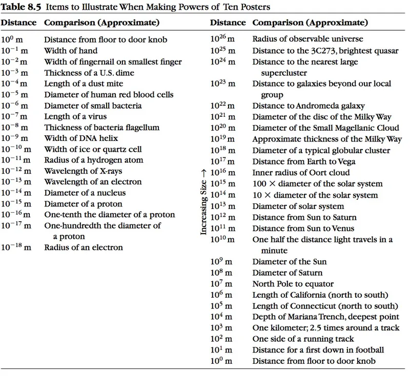

Post
Orders of magnitude
Visualizing the vast difference between a million, a billion, and a trillion
In English, the words "million" and "billion" differ by only one letter, yet that letter means that one of the words signifies something that is a thousand times larger than the other. A million is equal to one thousand thousands, or 1,000,000, while a billion is equal to one thousand millions, or 1,000,000,000. This means that a billion is a thousand times larger than a million.
Time Flies
| Magnitude | Past | Future |
|---|---|---|
| 1 Million Seconds | ||
| 1 Billion Seconds | ||
| 1 Trillion Seconds |
How to Conceptualize a Million
- One million is a thousand thousands.
- One million is a 1 with six zeros after it, denoted by 1,000,000.
- One million seconds is about 11 and a half days.
- One million pennies stacked on top of each other would make a tower nearly a mile high.
- If you earn $45,000 a year, it would take 22 years to amass a fortune of one million dollars.
- One million ants would weigh a little over 6 pounds.
- One million dollars divided evenly among the U.S. population would mean that everyone in the United States would receive about three-tenths of one cent.
How to Conceptualize a Billion
- One billion is a thousand millions.
- One billion is a 1 with nine zeros after it, denoted by 1,000,000,000.
- One billion seconds is about 32 years.
- One billion pennies stacked on top of each other would make a tower about 945 miles high.
- If you earn $45,000 a year, it would take 22,000 years to amass a fortune of one billion dollars.
- One billion ants would weigh over 3 tons—a little less than the weight of an elephant.
- One billion dollars divided evenly among the U.S. population would mean that everyone in the United States would receive a little under $3.
How to Conceptualize a Trillion
- One trillion is a thousand billions, or equivalently a million millions.
- One trillion is a 1 with 12 zeros after it, denoted by 1,000,000,000,000.
- One trillion seconds is about 32,000 years.
- One trillion pennies stacked on top of each other would make a tower about 945,000 miles high—nearly the distance of two round trips to the Moon.
- One trillion ants would weigh over 3,000 tons.
- One trillion dollars divided evenly among the U.S. population would mean that everyone in the United States would receive a little under $3,000.
